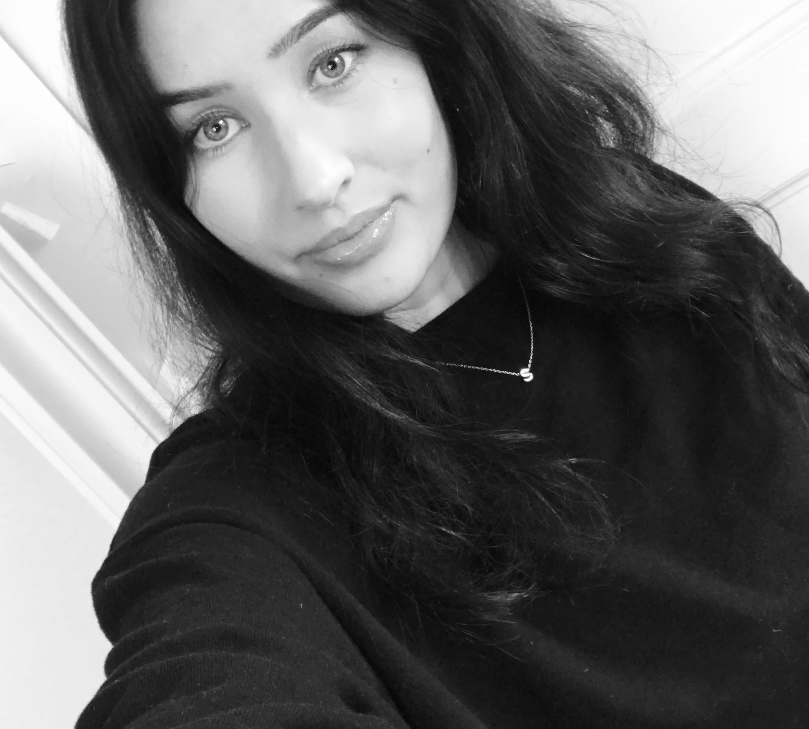

Saga Ekberg
“Smooth seas do not make skillful sailors.”
“Smooth seas do not make skillful sailors.”
Mitt namn är Saga Ekberg. Jag är en student som växte upp i en liten stad vid namn Eslöv men har sedan 2015 bott i Malmö. Det finns ett par saker som definierar den jag är som person men det som beskriver mig mest är kreativitet. Att rita och skapa konst är något som har varit en stor del av mitt liv och något som definierar inte bara mig utan hela min familj. De senaste åren har jag försökt hitta vad det är jag vill få ut av livet och hur jag skall uppnå detta. Jag började min resa med att läsa informationsarkitektur vilket var väldigt roligt.
Jag insåg snabbt att jag ville göra något som var lite mer kreativt. Efter ett par månader bytte jag program och läste istället Digital Design vilket kombinerade mitt intresse för programmering och it med min kreativa sida. Programmet tillät mig att utvecklas och växa i digital konst samtidigt som jag fick lära mig om interaktionsdesign och mycket annat. Det finns fortfarande mycket som jag inte vet och många nya saker som jag behöver lära mig. Min studietid har inte varit lätt men jag försöker mitt bästa och nu fortsätter min resa på Grit Academy där jag vill växa och bredda mina kunskaper.